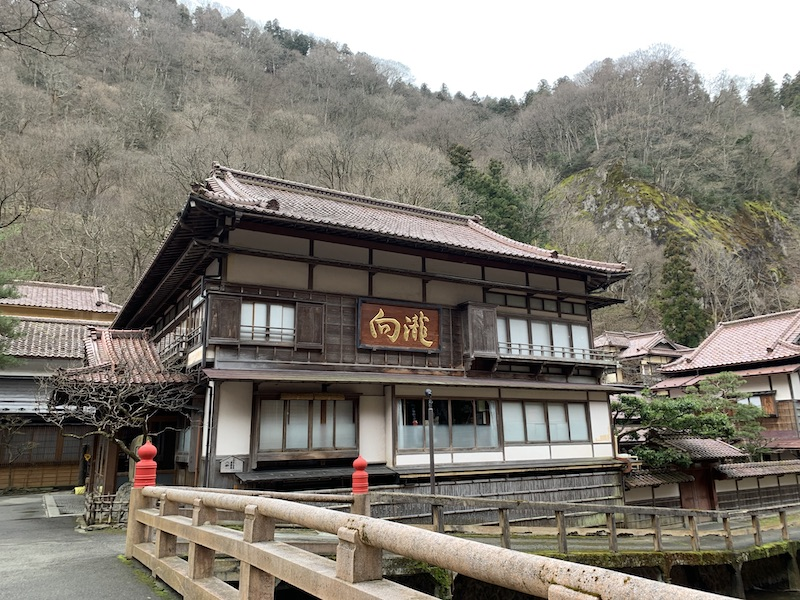

AIZUWAKAMATSU CASTLE
Tsuruga Castle (鶴ヶ城, Tsurugajō) was built in 1384 and changed hands many times between the different rulers of the Aizu region. It was destroyed after the Boshin War of 1868, a rebellion against the newly formed Meiji government, which had taken over control from the Tokugawa shogun and put an end to Japan's feudal era. Tsuruga Castle was one of the last strongholds of samurai loyal to the shogunate.
The castle was rebuilt as a concrete reconstruction in the 1960s. In renovation works completed in 2011, the color of the roof tiles was reverted from grey to the original red, a unique color among Japanese castles. Visitors can climb to the top floor of the castle keep and look out onto the surrounding city. The inside of the building is an interesting museum with attractive displays about the history of the castle and the samurai lifestyle.
HIGASHIYAMA ONSEN
Higashiyama Onsen (東山温泉) is a hot spring resort in a valley just east of the downtown area of Aizu Wakamatsu. There are quite a few large hotels and some shops for visitors. Although the hot baths may be relaxing and the surrounding valley beautiful, the area seems a bit worn down and overdeveloped.
One particularly notable ryokan in the area is the Mukaitaki Ryokan, which, contrasting with some of the surrounding concrete hotels, is a traditional, wooden construction. One will surely notice the ryokan when passing by, its name written in gold on the side of the eye-catching building.